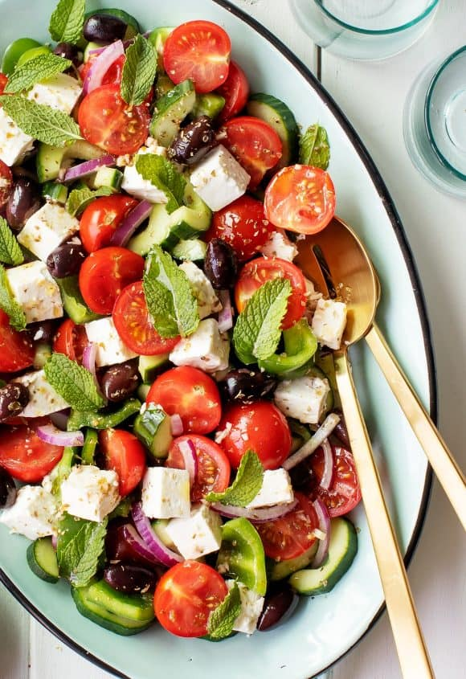

Salad
Welcome to the Salad recipe page! Here, you'll find a delightful recipe that will make your taste buds dance with
joy.

Introducing our treasured family recipe for a refreshing Salad! Crisp, colorful vegetables
tossed with a zesty dressing, making it a perfect side dish or a light meal. Each bite is a burst of freshness
that invigorates your palate.
Ingredients for salad!
- 2 cups mixed greens (lettuce, spinach, arugula)
- 1 cup cherry tomatoes, halved
- 1 cucumber, sliced
- 1 bell pepper, diced
- 1/2 red onion, thinly sliced
- 1/4 cup feta cheese, crumbled (optional)
- 1/4 cup olives (black or green)
- 1/4 cup nuts (walnuts, almonds, or pecans)
- 2 tablespoons olive oil
- 1 tablespoon balsamic vinegar or lemon juice
- Salt and pepper to taste
- Fresh herbs (parsley, basil, or cilantro) for garnish
Instructions to make salad!
- In a large bowl, combine the mixed greens, cherry tomatoes, cucumber, bell pepper, and red onion.
- Add the olives, nuts, and feta cheese (if using) to the bowl.
- In a small bowl, whisk together the olive oil, balsamic vinegar or lemon juice, salt, and pepper until well
combined.
- Drizzle the dressing over the salad and toss gently to combine, ensuring all the ingredients are coated.
- Garnish with fresh herbs for added flavor and color.
- Serve immediately as a refreshing side dish or a light meal.
Enjoy your homemade Salad, a dish that brings freshness and joy to every meal!
Enjoy your meal!
We hope you enjoy making and savoring this delicious Salad. It's a dish that not only fills your stomach but also
refreshes your spirit. Happy cooking and bon appétit!
More Recipes
Check out our Lasagna recipe for another delightful dish that will tantalize your taste buds!
Few more recipes
Explore more recipes on our homepage!